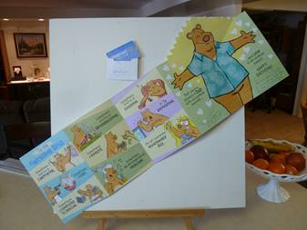

Friday, February 01, 2013
Being that it is Friday, I didn’t have to go into work as early. My AM run went well. After returning to the compound I went in and got Jana to help me with printing my payroll W-2 form. I was going to make a run in the car of new bus route but I called Mae and she needs to be at Dr. Bennett’s by 10:30am. I went home and got her and then we drove the route. We had trouble finding the first stop at Ronald Ave. in Layton we then went to the @nd stop and questioned that. I went into a business on Cross Street and found that the bus did pickup children just up the street from them. We then went back West on Gentile and finally found the Ronald Street. We then went on to Mae’s appointment and after that we finished the route. We came back home and got a little to eat before I went back to work and took the PM route. It seemed different to know that this would be my last day with these children and my assistant Kate. I cleaned out my bus after returning to the compound. I then checked out my new bus and found a few items that I wanted in my bus. I got those from the supply office. I also found that the previous driver had made some changes to the route time. I went in and talked to Rosa about them and she said that they were correct so use those times. After dinner this evening I went to Randy’s for a treatment. He worked on me for almost three hours. When he finished I felt like I was laying there in pieces waiting for me to pull back together. We tried to find something on TV to watch but there isn’t much there.
Saturday, February 02, 2013
We slept in until about 8AM and then took showers. After breakfast we went to the Bountiful Temple. Ae called Georgia and they are going to the temple also. Rick is going for training as he has been called to serve as a Veil Worker. Georgia went through an endowment session with Mae and I. After leaving the Temple the four of us went to Chuck-A-Rama to eat. We were there quite a while and then Mae and I went over to Georgia and Rick’s home to see the new upgrades to their kitchen and dining area. They have replaced the floor covering in the dining, kitchen, laundry and small bathroom areas. They changed the island cabinet top and replaced the stove and dishwasher. It really looks nice. We had fun visiting with them. We then came home and changed clothes before going to Tyler’s basketball game. Tonight the Morgan team lost the game. When we got home we watched the show on DVD “radio”. It was taken from a true story and was very good. It has been a great day being with Mae, although we were tired.
Sunday, February 03, 2013
I woke up at 4:30AM and was afraid that I would wake Mae if I went back to bed, so I came into the front room and went to sleep in the recliner. I woke a few minutes after 8AM and found that Mae had also just got up. I had to hurry to be at my 9AM meeting. We were busy getting ready for our Family History class and I also prepared a lesson for the High Priest class. I had forgotten that I was to conduct and give the lesson today. Our classes went very well today. I was able to finish my lesson in the High Priest and get over to help Mae and Sister Mc Entire set up for the Family History class. When the class finished we just put our equipment in the Family History room and lock the door. This saved us time to get to Sacrament meeting on time. During the testimony section of Sacrament meeting I bore my testimony. All the others that bore testimony did a very good job. After meeting we packed up our equipment and came home. When we got home I realized that we had left our speakers and amplifier at the church, so I went back and got those. Bob had prepared liver and onions for dinner and fried chicken for Mae. After dinner Mae and I cleaned up and then came downstairs and took a short nap. She and I played three games of “Knock” with Mae winning two out to the three games. We both worked on our journals before going to bed.
Monday, February 04, 2013
Mae didn’t sleep well last night so I let her sleep in. My run went fairly well this morning. After getting home I got on the computer to get information for my driver license renewal. By paying then, I could preregister plus get some other help. I entered the information but then got to a point where I couldn’t go any farther. About that time Bob came down with a letter about his Time-Share program. We made some calls about it and got an appointment to talk to a representative that would help him get out of the contract. We connected by phone and the internet and I finally turned it over to Mae as I cannot write at the same time I am being given additional information. Mae has that ability so I let her take over. Before the whole thing was over I had to leave for the PM run. That run went well but I did miss turning on Angel Street and so I was late getting to Snow Horse elementary. Mae told me when I got home that Bob paid the company to get him out of the contract. I hope it is the right choice. We were both tired this evening so we tried to find a show to watch on TV.
Tuesday, February 05, 2013
My run went well all though a girl reported that another girl had been restricted from the bus because she had harassed her. After the run I talked to Rosa about the situation and she told me to speak to her and see if the principle had restricted her? If so, the principle is the only one that can reinstate her. After getting home I started checking on the internet registering for my driver’s license and found out that the online sight that I had gone to was not in any connected with the Utah State Driver’s License Division. I called my bank and they suggested that we cancel our Debit/Credit card and they would send us a new card and pen number. He also said that with the information I had given they now had access to our account. He stopped all future activities on that card and after a couple of days go into our branch and ask them to start collection on fraudulent charges to get reimbursement on what was charged. The one good thing is, it was for only $14.00 and not a large amount. I decided to go to Brigham City to renew my driver’s license. Mae said that this time of day I should be able to get right in the Farmington office. That way I could take her to tend Mishelle’s children while she rested. We went that way and when I got to the Farmington office there was barley standing room and it would take at least two hours. I got Sub-Way sandwich’s for us and we ate those on the way home. I took a nap before going back. May PM run went well. I stopped after the run and got on the computers there and put in a request for the 1st of March off. There were a couple of others there that were having trouble getting their W-2 forms off. I told them what I could but then just had to wish them luck with the password. Mae had a very good homemade chicken and vegetable soup about ready for dinner. We had her homemade bread with it and it made a great dinner. I had a headache so took some pain pills and took a nap. I worked on my journals for a couple of hours before we went to bed. Mae has worked several hours on her life history today.
Wednesday, February 06, 2013
We both slept fairly well last night and were able to get up and get busy. Mae cooked waffles for breakfast and those are always delicious and welcomed. My run went well although Rosa called me to come into her office concerning some problems with the Jr. High run. The problem has escalated until one of the students went into the Principle and told him that as the driver, I know of the problems but wouldn’t do anything about it. I went to Brigham City to renew my CDL Drivers License. That went well and I passed the written test. After loading the students on the bus this afternoon I pulled the bus to the side of the parking lot and had a talk with them. I told that that I had been instructed to write up a report on any problems and take it into him personally. I also told them that not only would I write up any incidences but those that were involved would also go into the office with me along with the recorded disk from the bus monitor system. I also told them that if they had feeling towards any one then they needed to move to another seat. I hope this will put an end to this problem. Other than that my runs went very well today. I turned in my receipt for reimbursement on the expense of the driver’s license to the office before coming home. After dinner I tried to find something worth watching on the TV but watched the end of Gun Smoke and then turned it off. I printed some time schedules for my bus runs. Bryan Louw came by and replaced some parts on the T-Zone vibration machine. He was here about ½ hour to 45 minutes and it cost us $150.00. He suggested that I could use it by laying on my back on the floor with my legs on the rocker and running it at 10 to 15 speed. He also suggested that I should lift my but off the floor. Also put a pillow under my head. Doing it this way would help relax my legs and relieves the sciatic nerves. I am going to try it.
Thursday, February 07, 2013
Mae didn’t sleep well last night so I let her sleep in and I got myself off to work. My bus runs went very well this morning although the fog was very heavy. I stopped at the railroad crossing on Gentile, opened the door and window, hit the noise suppression and looked both ways. I sis not see or hear anything and so proceeded to cross when almost the same time I put the bus in motion, the red lights began to flash but I continued across. Mae was up getting ready to go up to Kim and Jeanenne’s home to get all their things out of the upstairs rooms and stored in the basement. I guess Sharlene, Jeanenne’s sister, is planning on locking the basement so that no one can go down there. My only concern is not having anyone able to check on items in the basement such as the furnace and water heater. My PM run went well except when I pulled into the bus loop at Snowhorse I could smell something burning. I checked the bus and we put all the windows. It didn’t take very long to get the worst of it out of the bus. We finished loading and took the children home. After all the children were unloaded I again checked the bus but still found nothing. I hurried home as Mae had dinner waiting. At 5PM we picked up Brother Francom and went to the Bountiful Temple. We had 7 from our ward that attended the temple tonight, maybe there was some during the day. We went right to bed when we got home.
Friday, February 08, 2013
I woke early thinking about my bus and the smoke that filled the insides yesterday. I decided to go in early to check it out further. Mae hadn’t slept the best last night so I let her sleep in and I got myself off to work. I checked everything out on the bus, drove it around for a little while and then went in and visited with a mechanic. He had me bring the bus up and he checked it but could not find anything wrong. We assume that one of the heater fans became jammed and heated up, although they are all working now. After finishing the AM run and getting home, Mae and I went over to the Aquatic Center and exercised for a couple of hours. After my PM run I turned my weekly trip record into the office, I met the original driver of the route. She asked me about the problems I had at the first of the week with the two girls. Before I left I told her of the problem of the fan heating up. She said that she had problems with the heater just behind the emergency exit door but they thought they had fixed it. I will have to remember that in the future. I had no problems on either AM or PM runs. When I got home Mae had taken Venla Reed to an appointment with her Doctor. I called her as it was snowing quite hard. They we just finishing and ready to come home. The traffic was getting bad but the roads weren’t yet bad. She was soon home. We had dinner and then I took a nap. Mae got working on her histories and let me sleep for at least 45 minutes. We watched the DVD segments that we will use in our lesson Sunday. We then watched a show on DVD “Member the Titans” and really enjoyed it although we have seen it before. It is a show worth seeing over. I sure enjoy being with my sweet wife.
Saturday, February 09, 2013
We both got up and after doing some exercises, we went back to bed for a while. When we got up Mae started preparing food to go to Mike and Becky’s for David’s Home Coming. I prepared breakfast of egg omelets. We seem to have kept busy until it was time to go to the Salt Lake airport to greet David as he returned home from his mission in Africa. There was quite a few of us there. After the Airport we all went up the Chuck-A-Rama on 4th South and 7th East. Mae and I drove from there to Georgia and Rick’s. They had two other couples that were coming over for dinner and then going to the Dance. While they ate we changed clothes. We enjoyed visiting and getting acquainted. The music was played by a disk jockey but he had good music and the decorations were very good. We enjoyed it but got tired and went home about 9:30PM. At the tables there was placed little Valentine cards you could fill out and give to your Sweetheart. Both Mae and I filled one out. It was interesting that after filling it out, we both; without seeing the others card; wrote the addressing the same “My Eternal Sweethart”. We were tired and went right to bed.
Sunday, February 10, 2013
I woke at 6:45AM and realized that we had over slept. We jumped right up and left for American Fork as quickly as we could. We met Jeff and Ben in Centerville and road the rest of the way with them. The roads we wet but not slippery so we made good time and got there in plenty of time. David did a very good job with his report. After church we went to Mike and Becky’s to visit and for lunch. Becky had everything ready and served a very nice lunch. We left Mike’s about noon and got home in time to pick up our equipment and get to the church before our class was to start. The class went well and as we ended it we just moved our equipment into the Family History room. We made it on time for Sacrament meeting. I was asked to give the opening prayer. After Sacrament meeting we attended choir practice, then picked up our equipment and went home. Bob had dinner about ready so we help with the finishing and ate. It has been a very rushed day.
Monday, February 11, 2013
I woke early to check the time. I guess I am worried that the alarm won’t work again this morning. I wasn’t able to get back to sleep. Mae also woke early but tried to get up without waking me. She didn’t come back to bed so that kept me awake. I finally set up two minutes before the alarm was to go off. I waited and it worked ok. Mae got breakfast and started the washing while I took my shower. My AM run went very well. After getting home I got on our external hard drive and found Mae’s PAF file that she thought she had lost. I spent a lot of time getting the PAF program downloaded but we now have that information for her. We had lunch and then we took a short nap. We got our new DEBIT cards today, we are still thankful that we didn’t lose a lot more than we die on the identity scam. I went in a little early this afternoon and checked on the computer to be sure that I got the day off on March 1. I also got a light replaced on my bus. My PM run went very well. We got a copy of an E-Mail from Shellie to Quint. Some news that was especially exciting is that Nora is expecting a baby about August 19 to 28th . Mae told me that we had been charged $50.00 extra for the work we had done on our equipment. I called Billing and told them that I didn’t feel that the charge was right as they had given us equipment that was incompatible and a service man had to come to find that out. They removed $35.00 from our bill, so I accepted that. Mae has been working on her history and asked for my help. We got involved in that and forgot the time. We wanted to watch a show on KBYU, “American Ride” that started at 7PM but we didn’t turn it on until 7:15PM. It is a very interesting show about American History. After the show, we went back to Mae’s history and worked on it until almost 9:30PM. I finished this entry and we went to bed.
Wednesday, February 13, 2013
Mae was not in bed with me when I woke with the alarm. I checked and she was in the other bedroom, so I gently closed the door so as not to disturb her. When I was showering Mae came in. I told her that I could get myself off but she said that she slept long enough. She took long enough to wash my back and then went in and started breakfast. Because of that I had Hot Cakes instead of cold cereal. Mae is such a special wife and sweetheart. My AM run went well although when I did my pre-check the coolant was low so I stopped at the shop and had a mechanic fill the reservoir. It was 9:30AM when I got home. I laid down and took a nap. Mae wrapped the electric blanket around my feet so they got warm. I slept for almost an hour. Mae has been very wrapped up with getting her personal histories written. Sometimes she is almost obsessed with it. I have got most of my important information backed up on our external hard drive now. I now need to backup Mae pictures on the external hard drive and then if anything should happen to our lap top, we would have a backup. We tried to find something on TV but the shows are so full of advertisements that it spoils the show. I worked on journal entries and found some of Mae’s write ups of friends in the Philippines and so transferred them to the other computer. It is now late so we will go to bed.
Thursday, February 14, 2013
Mae didn’t sleep very well last night. I let her sleep in and got myself off to work. My run went well. I stopped on the way home and bought Mae some flowers to go with her card. She was awake when I got there as she wasn’t able to go back to sleep. She was typing a letter to Quint. Mae finished up the letter and then she got dressed. I took her out to lunch at the smorgus board restraint. We got home about 1PM and Mae took Bob to the eye Doctor in Bountiful. She had to drive him back because the Dr. dilated his eyes. I took a short nap and then made my PM run. It went well with many students being taken home by their parents who are starting an early long weekend. Before coming home I stopped and got the car washed and vacuumed. We needed it clean for the trip Saturday to Fillmore for Aunt Joy’s 90th Birthday party. After dinner Mae went to bed while I went Home Teaching with Bob. We visited with Isaac Casey our normal very short visit from the door step, I wonder if we will ever get any further with them. We then visited with Patriarch and Sister Johnston. We were there almost 1 ½ hours but we have a nice visit with them. Before going to bed I entered this journal entry and took my evening pills.
Friday, February 15, 2013
Mae slept better last night and so we had time to eat together. I like that much better. My AM run went well. After getting through with the run then I went straight over to Dee’s Auto Repair where Mae was waiting for me. Dee is going to service, inspect and register the Buick for us. After getting home I worked on some thoughts concerning Rich. That took most of my time between AM and PM bus runs. Fridays are an early out day for grade schools so the elementary schools have to be taken home before the Jr. High students. I did go into work ½ hour early by accident so I used the extra time to wash my bus. The PM runs went well. When I got home I had Bob take me to get my car. I then went to the D.I. to drop off a few items Mae wanted to get rid of. I then went to J. C. Penney’s where I ordered me another Jump Suite. I got home and helped Mae with some of the last preparations before Ken and Vivian Shaw came. Mae had a very nice dinner prepared. After eating we visited and played “Trans America”, which they enjoyed. It has been a wonderful evening being together with them. We have had some memorable experiences together with them. The Shaw’s left a little after 9PM as Vivian has 200 cupcakes to make for a Grand Daughter’s Birthday Party tomorrow. We watched a J.A.G. serious before going to sleep.
Sunday, February 17, 2013
We both slept ok last night. I got up before 7AM as I need to go to the church house to set up our equipment before 9AM. I got there at 8:40AM and was able to get the equipment ready . I went to the High Priest Leadership meeting at 9AM. I for home before 10AM and we left for Bountiful by 10:15AM. We had time to visit with Grenn and Kathleen and then we visited with Karen and Charles Hire. Both Kathleen and Grenn gave wonderful talks. We stopped at Grenn and Kathleen’s home for a few minutes but had to hurry to get back to our Ward in time to give our Lesson. Time worked out just right and we accomplished all we needed to. We had some dinner and I took a short nap. We went over to Jeff and Gail’s where we played one game of Harts. Gail’s mother was also there. The game was very close but after playing until almost 10PM Gail had the highest score by only a very small spread. When we got home I entered this journal entry before we went to bed.
Monday, February 18, 2013
We slept in as today is President’s day. That is enough for that because I have very strong feeling of admiration for President George Washington and President Abraham Lincoln. I think it’s a shame on our country that we combined the Day of Celebration each of them. Any way we have had a good morning. Mae and I worked together to prepare turkey bacon, scrambled eggs, served with waffles, topped with frozen fruits, almond butter and yogurt. What a breakfast we enjoyed. We received a couple of very thrilling e-mails from Kaleesee. We also received a dis-hearting e-mail from David. Mae has been preparing things to go to Mike and Becky’s to tend their girls. She didn’t get away until almost 2PM and she had wanted to leave by 1:15PM at the latest. I worked on my 1970 – 1974 Diary entries. Bob had me come up and we watched a couple of movies that he had recorded. It is now 9PM and this house seems very lonely already with out Mae.
Tuesday, February 19, 2013
The morning went well except that I sure miss not having Mae here. After my run I came home and took a half hour nap and then wrote a letter to Utah Senator Scott K Jenkins and State Representative Paul Ray about my feelings on HB 255 that is being voted on February 22nd. I don’t know if it will do any good or not but I encouraged both to vote against it. My PM run went well and when I got home I fixed some dinner and ate while watching a show on TV. I worked on my 1971 – 1974 journals getting only two days interred. I then watched another series of the Ponderosa and entered this entry before going to bed. I was debating on staying up late to watch another western show but when it came on it was rated R, so I just turned it off.
Wednesday, February 20, 2013
My run went well, I had Cindy (and I don’t remember her last name) ride along with me to do my annual driving review, and that went well also. Shellie called me and they still want to use our car and drive up to the Trail Canyon Lodge on Thursday, which should work out ok. I talked to Mae a couple of times this morning and she is doing fine. I visited with Bob and I also called the Brigham City Temple about doing Initiator’s tomorrow. They said that we could come whenever we would like. Bob is going to go with me so that we can complete the names in about an hour. I called and left a message for Rick asking if he had received my e-mail. After eating lunch, I took a short nap and when I woke I felt that I was had to hurry to get to work. It wasn’t until; when I arrived at the school and there was no other busses in the bus loop that I suddenly realized that I was one hour early. Not wanting everyone else to realize my mistake I drove the bus back to Inter Mountain Farmers and parked there until time to pick up the students. The afternoon run went well. When I got home Bob invited me to eat with him. Later; I worked on my 1970 – 1974 Diary as well as watched a movie on TV. Mae called me before she went to bed. I sure miss her and will be glad when she comes home. Good night!
Thursday, February 21, 2013
After getting up I called Mae to be sure that she woke on time. My AM run went ok but I did make a mistake on the pickup time for the Snow Horse children. I was 10 minutes late but it came out ok. When I got home I quickly showered and changed clothes. Bob was ready to go as soon as I was ready. We went to the Brigham City Temple and performed the Initiatory Ordinances for 16 male ancestors of Linda Heydorn. It was a very special time. We stopped at a Sub-Way on the way home for a sandwich. I got a short nap before taking my PM run. When I got home Bob had dinner ready. After eating I came down stairs and watched a TV show and wrote this Journal entry. I also called and visited with Mae. She will be home tomorrow and I’m sure am excited about that. Before going to bed I played a game of Spider Solitary and won the game in 100 moves. That is the leased moves that either Mae nor I have ever done.
Friday, February 22, 2013
When my alarm went off the radio came on and I couldn’t shut it off so I just turned the volume down. I called Mae at 6 to be sure she had woken but she had just woke up on her own. I love talking to her and am glad that she will be coming home this morning. When I got home I decided to read the message David wanted me to read on u-tub, but I couldn’t find it. Any way I decided to reply to David’s e-mail, this is a copy of my reply.
Dear David,
I am sorry that I hadn't found time until this morning to find the article you referred to in your e-mail. When I brought up the site you gave me, I couldn't find that article, but he seems to have several others. As you said he WAS a seminary teacher.
I am very sorry that you feel that you can't visit with me about faith or any other subject relating to the gospel. As far as shaking my Faith, I have made it through 74 years and it hasn't been shaken yet. I am truly sorry that I don't handle my feelings very well when I discuss a subject so dear to me. I have found that it has been best in the past not to discuss my feeling about my philosophies of life with either you or Jeff, because I do upset either of you. Therefore, I just tried to stay off those subjects around you two.
Many years ago, when trying to discuss an attitude problem of a boy, with his parents, the Father ended the discussion with words I have never forgotten. He just said; "Someday you will understand." The years have gone and so has he, but I still think of his words. I too hope that someday you will understand the Love I have for you and your special family.
Love,
Dad
I hope he will take it without it being offensive to him. I decided to take a nap, in as much as Mae hasn’t got home yet. I just went to sleep when Mae called, but the call went right to my message. I called her back and she decided to go to Costco in Ogden. I reset the timer and went back to sleep. Again my phone buzzed and went to the answering message. I let that call go and went to sleep. When I got up I checked my messages and it was again Mae, so I called her. She is about ready to come home from Costco. I helped Mae carry things in and then we ate some lunch. My PM run went well and then we went to Jeff and Gail’s where we tended their children so they can go for an overnight anniversary trip. The children were well behaved and we enjoyed them. They know how to get what they wanted through their Grand Mother. They got stories read before going to bed.
Saturday, February 23, 2013
We slept in until we could hear the children up. Mae prepared hot cakes for breakfast, making Mickey Mouse heads for the children and by doing so she got all three of them to eat a good breakfast. Gail and Jeff came home about 9:30AM. They said that they had a great time. Gail and Mae went to a Sake Women’s Conference and had told us that they would be home by noon, but they didn’t get there until after 1PM. I had told Jeff that he and Ben should go on, as they wanted to go skiing. I told Jeff that I would tend the children until Gail and Mae got home. Just as they were ready to load things into the car, Gail and Mae came home. We got Jeff and Ben off and then Mae and I came home. It has snowing quite hard this morning. After getting home we ate lunch, took a nap, I then got the snow blower out and did our walks and drive way, plus Mike’s walks and driveway. I made some phone calls and popped some Pop Corn to take with us this evening. We went to Charles and Carolyn Saunders this evening and the four of us played games. Kelly and Marilyn Bodily were not able to make it this time. We got home just before 10PM. I entered this entry and then we took showers and went to bed.
Sunday, February 24, 2013
I woke about 7AM and was up for a little while. Mae soon got up. We had breakfast and then I went over to the church house just before 9AM and set up our equipment. I then attended High Priest Group Leadership meeting. When I went home I was cold so laid in the recliner with the electric blanket. Mae came and joined me, but then Sister Olsen called Mae. I fell asleep and slept for at least an hour. Meetings went well, we enjoyed our Ward Conference Sacrament meeting. The choir sang, accompanied by Sister Saunders at the piano, Sister Mitchell on the flute and Sister Fallis on the violin. It went quite well. Bishop Hatch spoke about Temple attendance and President Puffer spoke on preparedness. Both gave excellent talks and very sound advice. Mae and Sister Olsen went Visiting Teaching to Sister Fallis and then Bob and I went Home Teaching to her. Bob had a very nice pork roast dinner ready for us. This evening Mae and I watched a show on BYUTV. I filled out this entry and Mae looked at some e-mails from Kim and Jeanenne, it sounds like they are doing very well on their mission.
Monday, February 25, 2013
Mae was tired but still got up and got me off. I did help Mae make the bed and move some things into storage before leaving. My run went well. I stopped at Green’s Feed and ordered 18 chicks. I then stopped at the car wash to wash our car, but it was still too cold for them to open. After getting home I did some planning for the decorations for the High Priest Social on the 9th of March. I then picked up my new coveralls from J. C. Penny’s. I then tried the car wash again but they were still closed. My PM route went well and I was home about 20 after 4 but I got there before Mae got home with Shellie and Roy. We visited, watched “America Ride” on TV and then played Canasta for a while until Shellie and Mae skunked Roy and I. I filled out this entry before going to bed but it was 11PM before I went to sleep.
Tuesday, February 26, 2013
Mae had set my breakfast out for me and I let her sleep in until I left for my AM run at 6:55AM. After eating breakfast I work on my journals for a few minutes. Mae got up about 6:40AM, shortly before I left for work. She told me that she hadn’t got to bed until 11:45PM. My AM run went well, with getting home at 9:20AM. Mae had waffles ready for breakfast when I got here. Roy and Shellie left to go with Sandi, Chelci and Nathan to Heber City to go sleigh ridding. After getting them off Mae and I took a nap. My PM run also went well. I checked with Roberta about having my route covered on Friday, which she does but she doesn’t have enough drivers to let the substitute ride on Thursday. Shellie and Roy had a good time with Sandi, Chelci and Nathan, getting back about 5:30PM. We visited about their day and then Mae started dinner. Shellie, Mae and I played games this evening with dinner in between. It is almost 10PM so I had better get to bed.
Wednesday, February 27, 2013
I woke at 3AM and couldn’t go back to sleep. Mae woke about 4AM but I thought she was just going to come back to bed but she was having trouble sleeping so she went into the recliner and there slept until I woke her at 5:30AM. I finished reading the New Testament this morning and really did enjoy it and got more out of it this time than I ever remember before. I helped Mae prepare breakfast, as Roy and Shellie wanted to leave to go skiing early. Mae gave me a small air compressor along with a special Birthday Card. My AM route went well and between the Jr. High and grade school runs, I stopped at the grocery store and picked up a few items Mae wanted. After getting home I slept for over an hour. I worked on my 1970 – 1974 Journal until almost time for my PM run. Roy and Shellie got home from skiing at 6:15PM and changed. We then went over to Jeff’s where almost all of our family was there. Mike wasn’t able to come and Sandi didn’t have time to come tonight and tomorrow night too. We ate and played games. Our grandchildren had a great time playing together. The kids gave me some nice gifts for my birthday. Mike and Becky gave me a gift card for Sportsman’s warehouse, David and Shauna gave me $20.00, Scott and Mishelle gave me a Sizzler gift card, and Jeff and Gail gave me pair of nice Driving gloves. We were late getting home and I got to bed after 11PM.

Thursday, February 28, 2013
I got up and got myself off to work as it was after mid-night when Mae, Shellie and Roy went to bed. My runs went well and I returned home at 9:15AM. We got our snowmobile clothing ready. One of the helmets was broken and one had a bad shield. Mae took them over to Dicks and was able to get the parts we needed. I got a ½ hr nap before taking the afternoon run. Bob took Irven, Sandy, Mae and I out to Sizzler’s for dinner. He wished both Irven and I a Happy Birthday. I couldn’t help thing that that was the way Irven and I had our Birthday’s celebrated when we were young, My Birthday a day late and Irven’s Birthday a day early. It was nice of him to do that for us. Mae and I met with Marge and Morgan Thomas and Charles Saunder’s to discuss the decorations for the High Priest Banquet to be held March 9th. We were there very long. I stopped by the Therman’s for a quick personal visit and to invite them to the High Priest Banquet. I made some phone calls about Home Teaching for February and called Morgan with the results. Sandi and Nick got here at 9PM so we played one game of Sequence before going to bed.